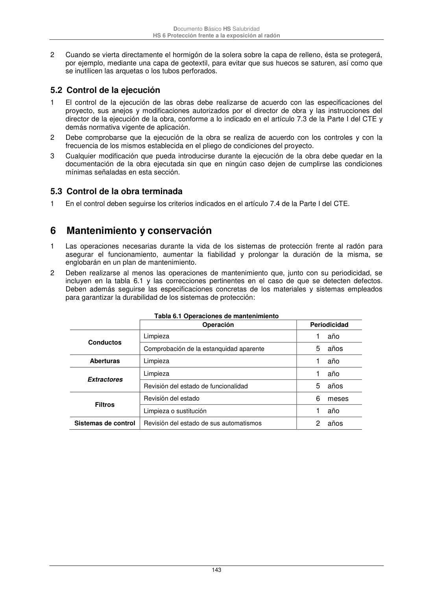

DB-HS Salubridad · edición 2022-06-14 · capa oficial
Documento DB-HS-oficial · SHA-256 del PDF 68df3caacc95f71aee2ec1ba7b2c65ae66155c21e3a8785521b8fdd4fd640d3b
Página física 143 de 184.
Copia fiel del PDF fuente · Fuente oficial
Ficha de la disposición en la fuente oficial
Formato: Texto de la página (Markdown)
Documento Básico HS Salubridad HS 6 Protección frente a la exposición al radón 143 2 Cuando se vierta directamente el hormigón de la solera sobre la capa de relleno, ésta se protegerá, por ejemplo, mediante una capa de geotextil, para evitar que sus huecos se saturen, así como que se inutilicen las arquetas o los tubos perforados. 5.2 Control de la ejecución 1 El control de la ejecución de las obras debe realizarse de acuerdo con las especificaciones del proyecto, sus anejos y modificaciones autorizados por el director de obra y las instrucciones del director de la ejecución de la obra, conforme a lo indicado en el artículo 7.3 de la Parte I del CTE y demás normativa vigente de aplicación. 2 Debe comprobarse que la ejecución de la obra se realiza de acuerdo con los controles y con la frecuencia de los mismos establecida en el pliego de condiciones del proyecto. 3 Cualquier modificación que pueda introducirse durante la ejecución de la obra debe quedar en la documentación de la obra ejecutada sin que en ningún caso dejen de cumplirse las condiciones mínimas señaladas en esta sección. 5.3 Control de la obra terminada 1 En el control deben seguirse los criterios indicados en el artículo 7.4 de la Parte I del CTE. 6 Mantenimiento y conservación 1 Las operaciones necesarias durante la vida de los sistemas de protección frente al radón para asegurar el funcionamiento, aumentar la fiabilidad y prolongar la duración de la misma, se englobarán en un plan de mantenimiento. 2 Deben realizarse al menos las operaciones de mantenimiento que, junto con su periodicidad, se incluyen en la tabla 6.1 y las correcciones pertinentes en el caso de que se detecten defectos. Deben además seguirse las especificaciones concretas de los materiales y sistemas empleados para garantizar la durabilidad de los sistemas de protección: Tabla 6.1 Operaciones de mantenimiento Operación Periodicidad Conductos Limpieza 1 año Comprobación de la estanquidad aparente 5 años Aberturas Limpieza 1 año Extractores Limpieza 1 año Revisión del estado de funcionalidad 5 años Filtros Revisión del estado 6 meses Limpieza o sustitución 1 año Sistemas de control Revisión del estado de sus automatismos 2 años

Datos candidatos: compruebe celdas y notas en el PDF.